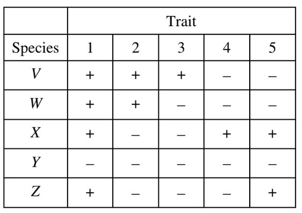

Data regarding the presence (+) or absence (-) of
five derived traits in several different species are
shown in the table below.

Which of the following cladograms provides the
simplest and most accurate representation of the
data in the table?
Use the table to infer relationship. Species \(X\) and \(Z\) are closely related since they only differ in trait 4.
\(W\) and \(V\) only differ in trait 3.
There is only one tree which correctly reflects this pair of relationships.
We can further confirm that the tree is accurate since \(Y\) is on its own branch.
From the table, species \(Y\) is different than other species by at least 2 traits.